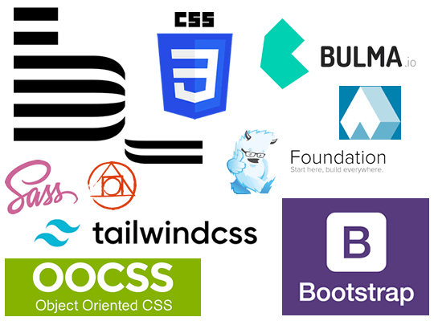

Fundamentos de CSS

Tomado de: https://www.tutorialmonsters.com/fundamento-basico-de-css/
El CSS o Hojas de estilo en cascada, permiten separar el contenido o estilo de una página web, permiten mayor control a los programadores, diseñadores y usuarios sobre cómo se muestran las páginas web.
Habitualmente se llama estilo de un elemento de una página web al código que estructura su aspecto gráfico, como puede ser el tamaño, el tipo y el color de la letra de un determinado párrafo.
Con CSS los diseñadores web, crean hojas de estilo que definen y estructuran cómo se mostrarán diversos elementos, tales como encabezados, enlaces, texto, imágenes, etc.
dichas hojas de estilo se pueden entonces aplicar a cualquier página o a todas las páginas en un sitio web particular, lo que hace la codificación mucho más sencilla y ágil para todos los desarrolladores.
Frameworks de CSS

Tomado de: https://www.alsacreations.com/actu/lire/1823-quels-framework-methodologie-css-choisir.html
Un framework de CSS es una biblioteca de estilos genéricos que puede ser usada para implementar diseños web. Aportan una serie de utilidades que pueden ser aprovechadas frecuentemente en los distintos diseños web.
Un framework de CSS, si está bien diseñado e implementado, proporciona las siguientes ventajas:
- Nos aseguran que el diseño va a funcionar en una amplia gama de navegadores
- Proporcionar una forma fácil y por tanto rápida de implementar diseños web.
- Nos aseguran que su código cumple cierta normas estándar.
- Nos aseguran cierto grado de fiabilidad en la eficacia de las utilidades que nos aportan. El framework se supone que está bien probado para asegurarnos que no hay errores.
El uso de un framework de CSS puede llevar aparejado las siguientes desventajas:
- La importación de código del framework que no es necesario en nuestro diseño web concreto, esto provoca un incremento innecesario del consumo del ancho de banda y del tiempo de descarga.
- Hay un menor control por parte del maquetador de lo que realmente está sucediendo en la visualización de la página web. Esto suele ser un problema cuando se tiene que corregir algún efecto indeseado.
- Al diseñar con código prehecho, podemos estar limitándonos en cuanto las posibilidades de elección del diseño web.
Tomado de: Framework de CSS. (2020, 3 de mayo). Wikipedia, La enciclopedia libre. Fecha de consulta: 23:15, septiembre 27, 2022 desde https://es.wikipedia.org/w/index.php?title=Framework_de_CSS&oldid=125731438.
Algunos Frameworks
- Bootstrap
- Materialize CSS
- Tailwind CSS
- Foundation
- Bulma
- Tachyons